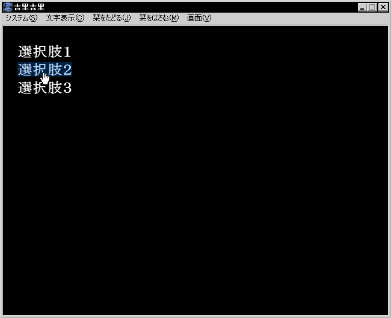

KAG implements options with a concept closer to a hyperlink rather than an option.
Use the
link and
endlink tags to use alternatives. If you put a text that is an option between these two tags, you can select it with the mouse or keyboard. When the mouse is clicked or the Enter key is pressed on the keyboard, it jumps to the label of the target attribute written in the corresponding link tag.
If you want to stop the operation, such as waiting for a choice or ending the scenario, write a
[s] tag. If you select "Go to next choice" from the menu, the scenario will be executed non-stop until this
[s] tag comes.
Using these, you can write as follows. Remember that the * (asterisk) after target= is required. Also, after | (vertical bar), it is not necessary when specifying after target.
[wait time=200]
*start|Start
[cm]
[link target=*select1]Option 1[endlink][r]
[link target=*select2]Option 2[endlink][r]
[link target=*select3]Option 3[endlink][r]
[s]
*select1
Option 1 has been selected.[l]
[s]
*select2
Option 2 has been selected.[l]
[s]
*select3
Option 3 has been selected.[l]
[s]
If you do this as it is, the choices will not disappear even if you select them.
To erase, usually write [cm] after the label.
[wait time=200]
*start|Start
[cm]
[link target=*select1]Option 1[endlink][r]
[link target=*select2]Option 2[endlink][r]
[link target=*select3]Option 3[endlink][r]
[s]
*select1
[cm]
Option 1 has been selected.[l]
[s]
*select2
[cm]
Option 2 has been selected.[l]
[s]
*select3
[cm]
Option 3 has been selected.[l]
[s]

Examples of choices
Note
Once a choice is selected, it cannot be selected until a new choice appears or the
unlocklink tag fires.
There is also a
locklink tag to make the choices already displayed on the screen unselectable.
You don't need to worry about this in normal writing.